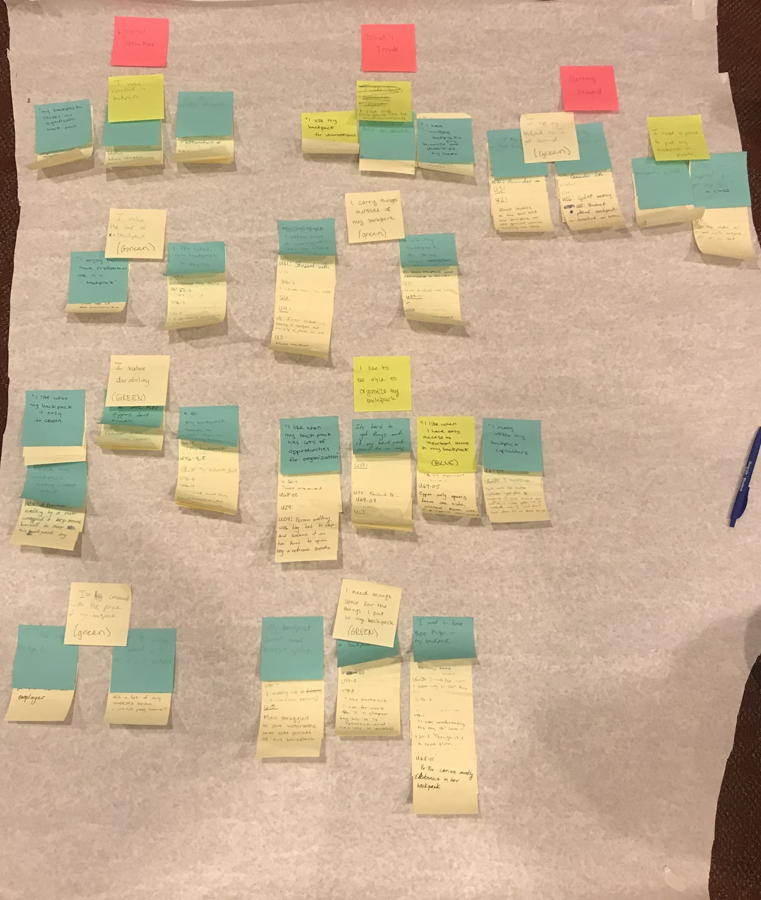

Backpacks Reimagined (CS 3750), August 2018 - December 2018
Task
Our group, Team Possible, was asked to redesign an everyday object. We chose the backpack. Although this course focused more on a user interface in a digital sense, we found that our users didn't see that as a need. We applied common UI principles to our physical design.
User Research
We began by brainstorming a list of stakeholders and narrowed it down to three groups that we believed had the most concerns: college students, commuters, and working professionals.
To get familiar with our users, we took a divide and conquer approach. We first recorded observations at different locations: on the bus, in the classroom, in our apartments, during class changes, etc. Next, we did a competitive analysis by looking at news articles, research articles, and Amazon reviews of backpacks. We began creating affinity notes based on user praises and concerns. For notes that were unclear, we decided to seek more information. This was the basis for our interview scripts and survey questions.
Note: Looking back now, this method of convenience sampling was not ideal and may not have been representative of the different stakeholder groups.
After gathering the data from interviews and surveys, we generated more affinity notes and grouped them using a bottom-up approach.
We settled on three key themes: external structure, what's inside the backpack, and traveling with the backpack.
More info on our user research process.
Ideation
More info on our ideation process.
Prototype
More info on our prototyping process.
Evaluation
More info on our evaluation process.